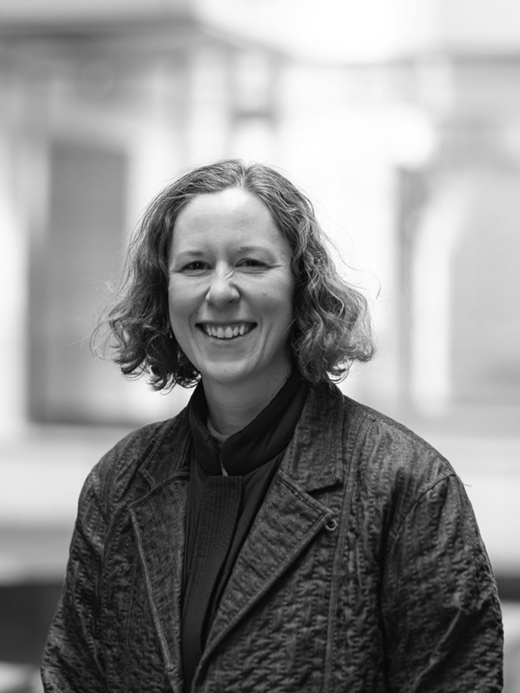

[GitHub] [GoogleScholar] [LinkedIn] [ResearchGate]

My research focuses on bridging digital design and physical fabrication to enable material-efficient and sustainable manufacturing processes. I am currently a Research Engineer at SXD, where I develop technologies for zero-waste pattern design, and a Visiting Researcher at Aalto University, contributing to the art-ai-fact project. Previously, I was a Project Assistant Professor at the University of Tokyo, where I conducted and co-led research published at top-tier venues including SIGGRAPH, CHI, and UIST. I received my Ph.D. in Information Science and Technology from the University of Tokyo in 2023, advised by Takeo Igarashi. I also have a background in architecture and art history.
CV: PDF
E-mail: ma.ka.larsson@gmail.com